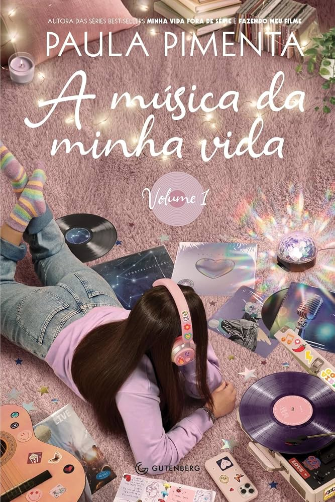

Literatura infantojuvenil · ficção
A música da minha vida
Entre amores, segredos de família e conflitos na escola, uma adolescente usa a música para lidar com as dores e descobertas do amadurecimento.
"Algumas melodias tristes também têm seu valor e somos nós os únicos responsáveis pela trilha sonora da nossa história."
Próxima leitura: Capítulo 1 — Coisas que eu sei